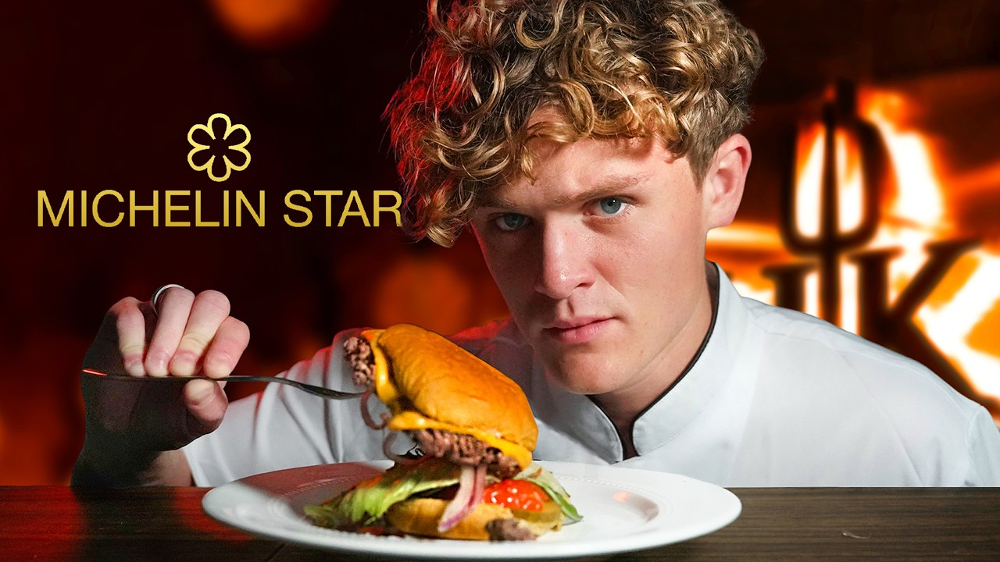
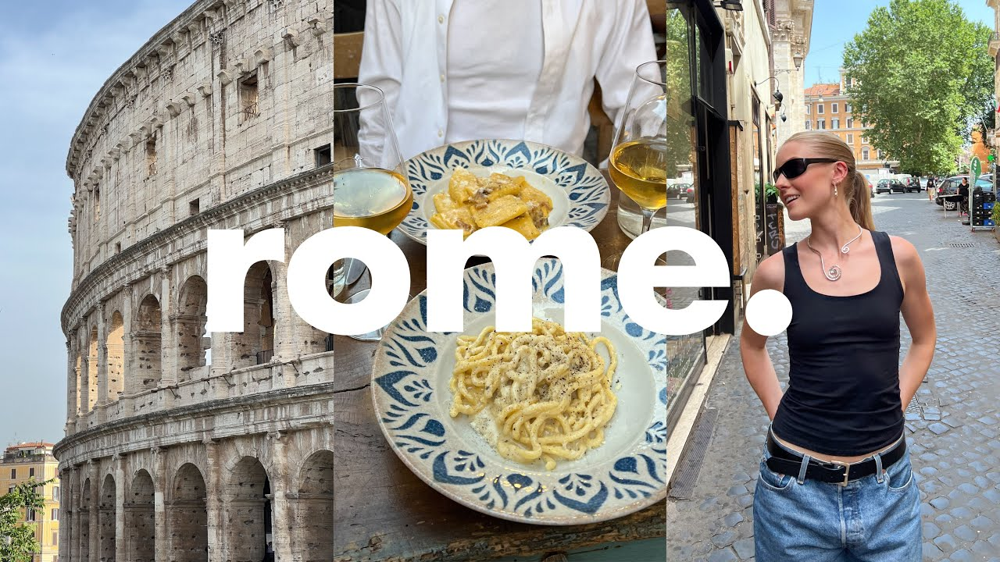

vlog生活英语
🔍 全局搜索：
标题
日期
时长
资源链接
四级
六级
雅思
托福
考研
专八
GRE
SAT
其它

Vlog生活口语：美食探秘｜美国五家顶级餐厅！披萨天堂/地狱...
2025-08-14
25:05
📄在线文稿
📁离线文稿
📚PDF
53
37
7
25
68
20
21
10
79
vlog生活口语纪实：一次说走就走的伦敦之旅｜油管博主@Bi...
2025-08-11
17:46
📄在线文稿
📁离线文稿
📚PDF
284
77
12
46
174
6
35
40
46

Vlog生活口语｜罗马旅行日记：永恒之城的惊喜之旅｜油管@B...
2025-08-15
18:18
📄在线文稿
📁离线文稿
📚PDF
34
30
4
18
43
10
21
12
30